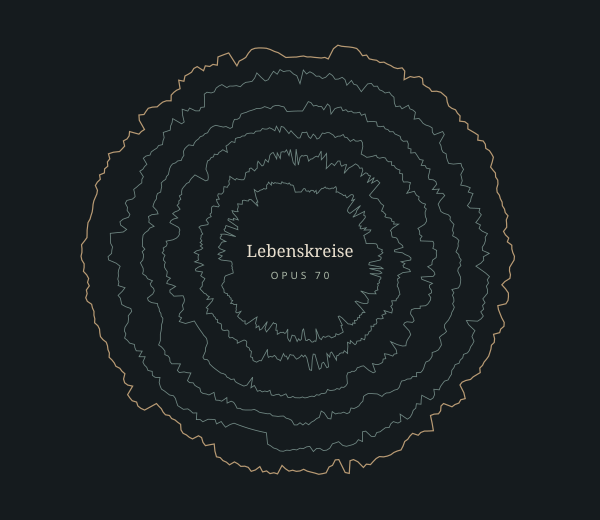

Das Entdeckungsbuch
Ausführlicher Werk- und Hörbegleiter nach Wilhelm Waldstein, mit sechs Satzporträts, Hörwegen und Quellenapparat.
PDF-E-Book herunterladen ↓Hans Gál (1890–1987)
Vom Morgen zum ewigen Licht: eine symphonische Kantate über Natur, Arbeit, Glück und Vergänglichkeit. Die Hamburger Aufführung hören, sechs Sätze erkunden und mit Wilhelm Waldstein tiefer in das Werk finden.

Jeder Satz besitzt sein eigenes Profil. Zugleich führen die Lebensphasen weiter: vom erwachenden Tag über Tätigkeit und innere Suche bis zu Abschied und Erneuerung.
Waldsteins Beschreibung erschließt, wie Gál aus den Singstimmen eine große symphonische Form entwickelt. Die Hörführer unten begleiten den Weg Satz für Satz.
Mit dem Morgen beginnen →Jetzt hören
1 / 6 · Friedrich Hölderlin
Mit ▶ starten oder einen Satz wählen. MP3-Hörkopien stehen unten als Downloads bereit.
Die Satzwahl springt innerhalb derselben Aufnahme. I → II und V → VI bilden nach Waldstein unmittelbare Übergänge. Die Dateien bleiben in der bereitgestellten Reihenfolge; Pausen und Publikumsgeräusche der Quelle sind erhalten.
Ausführlicher Werk- und Hörbegleiter nach Wilhelm Waldstein, mit sechs Satzporträts, Hörwegen und Quellenapparat.
PDF-E-Book herunterladen ↓Sechs MP3-Hörkopien mit 320 kbit/s stehen in der Dateiliste einzeln zum Herunterladen bereit. Der Player verwendet eine durchgehende AAC-Hörfassung.
MP3-Dateiliste öffnen ↗Katalogdauer und Aufnahmelänge sind unterschiedliche Angaben: ca. 90 Minuten für das Werk, 99:19 Minuten für die sechs bereitgestellten Dateien. Der AAC-Stream und die MP3-Downloads sind komprimierte Hörfassungen.
Vom Tau des Morgens zum ewigen Licht: Eine symphonische Kantate über Natur, Arbeit, Glück, Vergänglichkeit und geistige Erneuerung.
Hans Gáls Lebenskreise, 1955 komponiert, verbinden vier Solostimmen, gemischten Chor, Jugendchor und Orchester zu einem abendfüllenden Werk. Das Werkverzeichnis der Hans Gál Society nennt eine Dauer von ungefähr 90 Minuten und sechs Sätze: Der Morgen, Das Werk, Sinnen und Suchen, Natur, Dämmerung und Das ewige Licht. Die Folge ist zugleich ein Weg durch Tageszeiten und eine Betrachtung menschlicher Existenz. Das Bild des Tages ordnet die Erfahrung; die Fragen nach Tun, innerem Leben und Endlichkeit reichen darüber hinaus. [K]
Die Texte stammen von Friedrich Hölderlin, Johann Wolfgang von Goethe und Theodor Fontane. Im Finale tritt der traditionell Hrabanus Maurus zugeschriebene Hymnus Veni creator spiritus in Goethes deutscher Übertragung hinzu. Gál verbindet die Dichtungen zu einem eigenen Zusammenhang. Die einzelnen Stimmen sprechen deshalb nicht nur als Vertonergebnisse verschiedener Gedichte, sondern als aufeinander bezogene Stadien einer großen vokalen Form. [K; W; P, S. 1]
Dieser Hörbegleiter erschließt das Werk vor allem durch Wilhelm Waldsteins Beschreibung. Seine Gál-Studie von 1965 vermittelt eine genaue Vorstellung von Klangfarben, Themen, Satztechnik und dramatischer Bewegung. Sie ist zugleich ein historisches Deutungszeugnis: Ihre Wertungen werden hier als Waldsteins Sicht kenntlich gemacht. Die vorgeschlagenen Hörfragen sind redaktionelle Anregungen auf dieser Grundlage; sie beanspruchen keine vom Komponisten autorisierte Programmatik. [W]
Als Hörquelle dienen die sechs vom Herausgeber bereitgestellten Dateien zur Aufführung von Chor und Orchester der Universität Hamburg unter Bruno de Greeve im Februar 2009. Die universitäre Ankündigung präzisiert den Anlass: Winter-Universitätskonzert am 1. Februar 2009, 20 Uhr, Großer Saal der Laeiszhalle Hamburg. Die Solopartien übernahmen Dorothee Fries, Christa Bonhoff, Dantes Diwiak und Konstantin Heintel. [H; P]
Ein äußerer Auftrag trifft auf ein inneres Thema.
Waldstein führt die Entstehung auf den Auftrag für das Festkonzert zum 125-jährigen Bestehen der Mainzer Liedertafel im Jahr 1956 zurück. Die Stadt, in der Gál zuvor gewirkt hatte, wandte sich damit erneut an den Komponisten. Waldstein betont das Verhältnis zwischen öffentlichem Anlass und persönlichem Gehalt: Ein Auftragswerk kann die ganze geistige Persönlichkeit seines Schöpfers zum Ausdruck bringen. Als Vergleich nennt er Beethovens Missa solemnis. Das ist eine Aussage über den schöpferischen Antrieb, keine Behauptung gleicher musikalischer Gestalt. [W]
Die im Werkverzeichnis angegebene Jahreszahl 1955 bezeichnet die Komposition; 1956 ist das Jahr des Jubiläums und der Uraufführung. Waldsteins Hinweis, das große Werk sei in drei Monaten vollendet worden, beschreibt die konzentrierte Schaffensphase. Er darf nicht mit dem gesamten Zeitraum von Anregung, Textsuche, Ausarbeitung und Aufführung gleichgesetzt werden. Das Hamburger Programmheft dokumentiert diese längere Entstehungsgeschichte anhand des Briefwechsels mit Otto Schmidtgen. [W; K; P, S. 6–10]
Die Uraufführung fand am 26. Oktober 1956 im Großen Saal des Kurfürstlichen Schlosses in Mainz unter Otto Schmidtgen statt. Das Hamburger Programmheft nennt die Mainzer Liedertafel, den Männergesangverein Concordia aus Lörzweiler, Knaben des Mainzer Domchors und das städtische Orchester Mainz. Der Katalog verzeichnet außerdem eine Rundfunkübertragung dieses Konzerts durch den Südwestfunk im März 1957. Eine Übertragung ist dabei von einer neuen Aufführung zu unterscheiden. [P, S. 10; K]
Eine zweite Verbindung nach Mainz liegt im Schlusshymnus. Waldstein berichtet, dass Gál die Beziehung des traditionell als Verfasser genannten Hrabanus Maurus zum Mainzer Bischofssitz erst nachträglich erfuhr. Für die musikalische Entscheidung war die deutsche Fassung Goethes wesentlich. Waldstein zufolge hätte Gál den lateinischen Originaltext als fremd empfunden und nicht vertont; die Erinnerung an Mahlers Verwendung desselben Hymnus war dabei nicht der einzige Gesichtspunkt. Die lokale Beziehung vertieft somit einen Zusammenhang, der zuerst durch Sprache und musikalische Vorstellung entstanden war. [W]
Sechs selbstständige Sätze werden zu einer gemeinsamen Bewegung.
Waldstein unterscheidet die Lebenskreise ausdrücklich von De profundis. Die sechs Sätze der späteren Kantate durchmessen in ihrer Abfolge den menschlichen Lebensraum. In der von ihm überlieferten Erklärung Gáls bildet jeder Teil einen bestimmten Aspekt des Lebens und seiner Betrachtung ab; die Teile besitzen jeweils die Selbstständigkeit eines Symphoniesatzes und stehen zugleich in einer zyklischen Beziehung. Die Einheit liegt daher sowohl in der Folge der Erfahrungen als auch in musikalischer Gestaltung. [W]
Für Gáls eigene Erläuterung ist die doppelte Bestimmung entscheidend: symphonischer Bau und vokale Erfindung. Waldstein überliefert die Formulierung, das Werk sei, abgesehen von zwei symphonischen Zwischenspielen, „ganz und gar erfindungsmäßig auf dem vokalen Apparat aufgebaut“. Die Singstimmen tragen also nicht bloß Texte in einen vorab instrumental gedachten Bau hinein. Aus ihren Themen, ihrer Deklamation und ihrem wechselnden Zusammenwirken entsteht die Form. [Gál, zitiert nach W]
Waldstein hört darin äußerlich eine Nähe zu Mahlers großen vokal-instrumentalen Architekturen. Die innere Eigenart Gáls bestimmt er jedoch durch Ökonomie, Abneigung gegen Überschwang und Pathos sowie einen von seelischer Zerrissenheit freien Verlauf. Solche Formulierungen gehören zur ästhetischen Perspektive des Biographen. Für das Hören sind sie als Prüfauftrag fruchtbar: Wo erzielt die Musik mit wenigen Stimmen große Intensität, und wann erhält das volle Orchester besonderes Gewicht gerade deshalb, weil es zuvor zurückgenommen war? [W]
Mehrstimmigkeit besitzt dabei mehrere Funktionen. Im ersten Satz wächst aus einem zunächst einstimmig vorgestellten Gedanken eine polyphone Entfaltung. Im dritten stehen Solisten und Chor wie Einzelne und Gemeinschaft einander gegenüber. Der vierte macht aus der Fuge eine dramatische Naturgewalt; im Finale werden zwei Themen gleichzeitig geführt. Diese Unterschiede verhindern, dass Kontrapunkt nur als einheitlicher gelehrter Stil wahrgenommen wird. Er kann Bitte, Widerstreit, Bewegung oder Verbindung bedeuten. Diese Lesart ergibt sich aus Waldsteins Satzbeschreibungen. [W]
Der großräumige Weg umfasst zudem eine besondere Schlussbildung: Dämmerung und Das ewige Licht gehen ineinander über und gehören nach Waldstein zusammen. Schon der Morgen führt ohne Unterbrechung in Das Werk. Einzelne Sätze lassen sich zum Entdecken separat hören; die Übergänge erschließen jedoch erst, wie Gál selbstständige Teile in eine übergreifende Zeitbewegung einbindet. [W]
Aus einem einzelnen Gesang wächst die Vielstimmigkeit des Tages.
Hölderlins Morgen eröffnet die Kantate als Bild eines Lebensbeginns. Waldstein beschreibt die Grundstimmung als A-Dur-geprägte Innigkeit und Naturverbundenheit. Der Morgen ist damit nicht nur eine Landschaft vor dem Menschen. Naturerfahrung wird zum Ausdruck einer inneren Haltung, aus der das weitere Leben hervorgehen kann. [W]
Die Orchestereinleitung skizziert zunächst, was der Chor später deutlicher ausspricht. Mit „Vom Taue glänzt der Rasen“ stellen die Tenöre das Thema zunächst monodisch, also einstimmig, vor. Dieser Weg vom Andeuten zum artikulierten Gesang ist ein wichtiger Einstieg: Eine musikalische Welt wird hörbar, bevor sie sich in mehrere selbstständige Linien auffächert. Waldstein zeigt das Tenorthema als Notenbeispiel. [W]
Der Gedanke speist einen sich ausbreitenden polyphonen Satz. In einem Mittelteil wird das Aufwallen der Fluten am Gestade zum bewegteren Bild. Danach gleitet die Musik zurück und findet zur Reprise. Rückkehr bedeutet hier nicht Stillstand: Das wiedererkannte Material hat die Erfahrung der Bewegung aufgenommen. So lässt sich bereits innerhalb des ersten Satzes das Verhältnis von Wandel und Zusammenhang verfolgen, das Gál für das ganze Werk beschreibt. [W; redaktionelle Deutung]
Nach einem erneuten Absinken bereitet Gál die Fuge über „Segne mir lieber denn mein sterblich Tun“ vor. Waldstein versteht sie, zusammen mit lyrischen Episoden, als Zusammenfassung des Satzes. Die Bitte wird nicht nur ausgesprochen, sondern durch den nacheinander einsetzenden Gesang in einen gemeinsam getragenen Vorgang verwandelt. Das von Waldstein abgebildete Thema ist mit pp, dolce e legato bezeichnet. [W]
Am Ende steht ein sehr leises Adagio. Waldstein beschreibt diesen Schluss als ein Verklingen, das zugleich Verklärung ist. Der Rückzug der Lautstärke beendet die Bewegung nicht endgültig: Attacca schließt Das Werk an. Aus dem gesammelten Morgen wächst die Tätigkeit. Beim Hören lohnt es sich, die letzte Ruhe des ersten Satzes nicht vorschnell als Pause zu behandeln. [W]
Arbeit und schöpferische Kraft gewinnen einen anderen Klang.
Nach der Innigkeit des Morgens öffnet sich eine kräftigere Welt. Waldstein beschreibt das Thema des Orchestervorspiels als diatonisch und energisch. Ihm tritt ein eindringlich rhythmisierter Seitengedanke gegenüber. Der Biograph verbindet diesen Satz mit Tat und Kraft; seine zeittypische Bezeichnung als männliche Sphäre wird hier als historische Deutung wiedergegeben. Musikalisch ist die Hervorhebung der Männerstimmen konkret: Der Solobass eröffnet die Strophen, der Männerchor nimmt sie auf, entwickelt und steigert sie. [W]
Das Wechselverhältnis zwischen Vorsänger und Chor ist mehr als eine Verteilung der Lautstärken. Ein Einzelner gibt den Anstoß, die Gruppe führt weiter. Waldstein erinnert daran, dass Gál eine solche Technik bereits in De profundis erprobt hatte. Im Zusammenhang der Lebenskreise lässt sie sich als klangliche Entsprechung des Werks und seiner gemeinschaftlichen Hervorbringung hören. Der zweite Gedanke ist eine Hörperspektive, keine zusätzliche programmatische Aussage Gáls. [W; redaktionelle Deutung]
Im Lied der Schmiede aus Goethes Pandora erweitert sich der Klang durch den Frauenchor. Waldstein hebt besonders die Stellen hervor, an denen die Wunder der Natur, das fließende Wasser und die lebenden Wesen besungen werden. Die Tätigkeit steht dadurch in einem größeren Lebenszusammenhang. Das musikalische Personal wächst mit dem Gegenstand der Dichtung. [W]
Den Kontrast des Mittelteils fasst Waldstein am knappen, harten Gedanken „Erde, sie steht so fest“ und an dessen Notenbeispiel. Danach kehrt das Schmiedelied verkürzt und mit neuen Textworten wieder. Die Rückkehr ist also zugleich Wiedererkennen und Umformung: Gál stellt nicht einfach dieselbe Strophe erneut hin. [W]
Zum Schluss greift das Orchester auf die Einleitung zurück und bündelt die Kraft des Satzes. Waldstein betont, wie ungewöhnlich ein solch machtvoller Orchesterschluss für einen Komponisten sei, dem eher leise Schlüsse nahegelegen hätten. Gerade im Vergleich mit dem pp-Adagio des ersten Satzes wird das Profil dieses Endes deutlich. Die Musik findet zu einer Festigkeit, die im folgenden Satz wieder einer offeneren, fragenden Haltung weichen wird. [W]
Das innere Leben spricht in wechselnden Stimmen.
Eine Oboe führt über gedämpften Streichern in eine andere Gefühlsregion. Waldstein hebt das gelichtete, reduzierte Partiturbild hervor. Nach der gebündelten Kraft des zweiten Satzes erzeugt die veränderte Besetzung eine neue Nähe. Der Solosopran setzt mit dem Anruf „Echo des Himmels, heiliges Herz!“ ein; Waldstein zeigt den melodischen Beginn im Notenbeispiel. [W]
Die Melodie gewinnt zunehmend Fluss und bereichert zugleich die zarte Orchesterbegleitung. Später übernimmt der Frauenchor den Gedanken. Darüber wölbt der Sopran eine neue Gegenmelodie, steigert sich in lyrischer Triolen-Koloratur und vereint sich wieder mit dem Frauenchor. Waldsteins Beschreibung macht damit mehrere Ebenen hörbar: Übernahme, Selbstständigkeit und erneute Verbindung. Die Solostimme bleibt eine eigene Linie, ohne aus dem gemeinsamen Klang herauszufallen. [W]
Dann wechselt die Szene. In einem eingeschobenen Abschnitt verbindet das polyphon geführte Soloquartett Verse aus Goethes Torquato Tasso. Der Abschnitt mündet in einen sehr leisen Chor über das Glück, das Menschen besitzen können, ohne es zu erkennen oder zu schätzen. Die Vergrößerung von einer Solostimme zum Quartett und schließlich zum Chor verschiebt die Frage vom individuellen Empfinden zur gemeinschaftlichen Einsicht. Diese Verschiebung ist eine aus dem beschriebenen Ablauf gewonnene Hörperspektive. [W]
Solovioline und Solocello bereiten gemeinsam mit einer Flöte den Gesang des Soloalts vor. Er knüpft an die Fragwürdigkeit des Glücks an und singt die Verse der Epimeleia aus Goethes Pandora in einer von Waldstein als reich empfundenen Melodik. Der Tenor tritt hinzu; der Chor erhält erneut eine bestätigende Refrainfunktion. Die kammermusikalische Vorbereitung ist hier ebenso bedeutsam wie der vokale Eintritt: Das Orchester kann eine innere Frage aufnehmen und weiterreichen. [W]
Waldstein vergleicht das Gegenüber von Solisten und Chor mit dem Prinzip der antiken Tragödie: Protagonisten und Volk treten in Beziehung. Der Vergleich beschreibt die Rollenverteilung, nicht eine nachgespielte Handlung. Für diesen Satz lässt sich daraus ein besonders ergiebiger Hörweg gewinnen: Wer empfindet, wer fragt, wer bestätigt, und wann verändert die Antwort der Gemeinschaft den Ton der Einzelnen? [W]
Lied, Gewitter und nächtlicher Spuk führen durch widersprüchliche Naturerfahrung.
Der Solotenor beginnt in lockerer Stimmung mit „Leichte Silberwolken schweben durch die erst erwärmten Lüfte“. Waldstein beschreibt eine Liedweise in Viertelbewegung und strenger Achttaktigkeit. Sie erinnert ihn an frühe Liedkunst; Erweiterungen und harmonische Ausweichungen weisen für ihn zugleich auf den modernen Komponisten. Der scheinbar einfache Anfang enthält also bereits ein Spiel zwischen Vertrautheit und Verwandlung. [W]
Ein dramatischer Kontrast stellt die Natur als bedrohliche Macht vor. Entscheidend ist nach Waldstein das Bangen vor dem Ausbruch. Die Musik illustriert nicht allein ein Wetterereignis, sondern gestaltet die seelische Reaktion auf Naturgewalt. Zur Erläuterung beruft er sich auf einen Goethe-Brief von 1818: Nicht das Nachahmen des Donners, sondern das durch ihn ausgelöste Gefühl begründet musikalische Darstellung. Der hier referierte Gedanke ist über Waldstein vermittelt; der Brief wird nicht als unabhängig geprüfte Quelle beansprucht. [W]
Das Gewitter entfaltet sich als c-Moll-Chorfuge, von den Bässen eröffnet. Instrumentale Darstellung bleibt vorhanden, doch das Gewicht liegt nach Waldstein beim Chor. Mit dem Text „Erdschlünde tun sich auf“ nennt er eine besonders prägnante musikalische Wendung und bildet sie ab. Das erschreckende Bild wird so durch organisierte Mehrstimmigkeit getragen. [W]
Aus dem Gewitter wächst ein Scherzo notturno: aus der Tiefe aufsteigend, fugiert, in einem schlanken 3/8-Takt. Waldstein hört darin einen gespenstischen Reigen und einen Walpurgisnachttraum. Wenn der Chor das aus den Grüften kommende Gnomenvolk und dessen Warnung vor dem Gold schildert, wechselt die Bewegung in den 2/8-Takt. Das Gold verheißt hier kein Heil. Noch einmal brandet der Spuktanz auf, steigert sich zur Raserei und verschwindet. [W]
Die Atmosphäre klärt sich. Sopran und Tenor vereinen sich zu einem Zwiegesang, der die Himmelshelle preist. Waldstein beschreibt einen verhauchenden Schluss und hebt die versöhnende Erkenntnis „Alles ist am Ende gut!“ als für Goethe und Gál gleichermaßen bezeichnend hervor. Die Aussage gewinnt ihr Gewicht durch die eben durchschrittene Angst; als isoliertes Motto würde sie die Spannweite des Satzes verkürzen. [W; redaktionelle Deutung]
Der Rückzug des Lebens wird zum Übergang.
Die beiden letzten Sätze bilden nach Waldstein einen zusammengehörigen Verlauf und gehen ineinander über. Dämmerung ist deshalb nicht bloß der langsame Satz vor einem unabhängigen Finale. Was hier an Abschied, Ruhe und Annahme entsteht, bestimmt die Bedeutung des späteren Lichtes. Die äußere Gliederung in zwei Dateien sollte beim Entdecken des Werks nicht darüber hinwegtäuschen, dass die Musik einen Zusammenhang verlangt. [W]
Das Adagio beginnt in D-Dur und ist dennoch von weher Abschiedsstimmung geprägt. Waldstein macht auf ungewohnte Klangfarben aufmerksam. Dur bezeichnet hier also nicht einfach Unbeschwertheit. In der Folge von Versen Hölderlins, Goethes, nochmals Hölderlins und schließlich Fontanes entsteht eine gedankliche Bewegung, die verschiedene dichterische Stimmen in eine gemeinsame Zeit des Abschieds einbezieht. [W]
Der Soloalt eröffnet den Satz. Später steht der Solobass dem Chor gegenüber. Waldstein hört ein immer tieferes Eindringen in Demut, Hingabe und eine freudige Annahme des Schicksals. Diese Deutung sollte nicht über die Trauer hinweghören lassen: Gerade das Nebeneinander von weher Stimmung und zustimmender Haltung macht die beschriebene Spannung aus. Einzelstimmen und Chor tragen sie in wechselnden Rollen. [W; redaktionelle Höranregung]
Der Choralt intoniert die Fuge „Einen vergänglichen Tag“. Sie führt auch ein zweites lyrisches Thema herauf und gelangt schließlich zu tiefer Ruhe. Waldstein verdichtet den Zustand zum Bild einer inneren Meeresstille. Kontrapunkt wirkt hier anders als im Gewitter des vierten Satzes: Die vielen Stimmen setzen nicht Bedrohung frei, sondern finden in eine Ruhe, die aus Bewegung hervorgegangen ist. [W]
Wieder singt der Soloalt dem willig folgenden Chor die Betrachtung zu, aus der der Gesamttitel stammt: „Immer enger, leise, leise ziehen sich die Lebenskreise“. Waldstein weist ausdrücklich auf diese Herkunft hin. Erst spät erscheint somit das Wort, unter dem das ganze Werk steht. Danach weckt ein Hörnerruf die Erwartung des ewigen Lichtes; das Orchester beginnt aufzuwogen. Die Dämmerung ist eine Schwelle, an der der Rückblick in eine neue Richtung umschlägt. [W]
Zwei Themen und viele Stimmen finden zu einer gemeinsamen Sprache.
Aus der Dämmerung kündigt das aufwogende Orchester einen neuen Morgen an. Waldstein verwendet dafür das Bild eines künftigen Lebens. Der volle Chor begrüßt mit hinzutretenden Knabenstimmen den schöpferischen Geist. Im Werkverzeichnis ist die zusätzliche Besetzung als Jugendchor geführt; Waldsteins Beschreibung nennt Knabenstimmen. Beides ist in seiner jeweiligen Quellenfunktion zu unterscheiden. Der Beginn „Komm, Heiliger Geist, du Schaffender“ lässt die geistliche Dichtung als deutschen Gesang hörbar werden. [W; K]
Waldstein legt Wert darauf, dass Gál Goethes Übertragung vertonte. Der Text steht damit im sprachlichen Zusammenhang der vorausgegangenen deutschen Dichtungen. Der Hymnus bildet einen geistlichen Zielpunkt, ohne die vorherigen Lebensbereiche einfach abzuschneiden: Nach Naturerfahrung, Arbeit, Suche und Abschied richtet sich die Bitte auf schöpferische Erneuerung. Der letzte Zusammenhang ist die hier vorgeschlagene Lesart des beschriebenen Gesamtwegs. [W; redaktionelle Deutung]
Die Vertonung ist strophisch angelegt, zugleich aber dreiteilig. Die Mittelstrophen schließen sich zu einem reich kontrapunktischen Gebilde zusammen, in dessen Zentrum eine Fuge steht. Waldstein hebt diesen neuen Formgedanken hervor. Eine Folge von Strophen wird dadurch zu einem großräumigen Bau: Wiederkehr und Entwicklung schließen sich nicht aus. [W]
Im Kern beschreibt Waldstein eine Doppelfuge. Dem Chorthema „Daß wir im Körper Wandelnden“ stellt das Orchester ein zweites, aus dem Vorangegangenen bekanntes Thema zur Seite, das er mit „Den Sinnen zünde Lichter an“ bezeichnet. Nach der Durchführung im doppelten Kontrapunkt vereinigen sich beide Themen im Chor. Nun sind den verschieden konturierten Linien dieselben Textworte unterlegt. Waldstein bewundert daran besonders die deklamatorische Leistung. [W]
Doppelter Kontrapunkt bedeutet hier, dass die Stimmen ihre Lage gegeneinander vertauschen können und dennoch miteinander verbunden bleiben. Zum Hören muss man diese Technik nicht benennen können: Zunächst treten zwei unterscheidbare Gestalten auf, später werden sie als gleichzeitige Stimmen einer gemeinsamen Aussage erfahrbar. Die verbreiterte Reprise mit Soloquartett und Chor führt in eine hochgipfelnde Coda. Glanzvolles A-Dur schließt den Kreis zum ebenfalls A-Dur-geprägten Morgen und stellt nach Waldsteins Deutung das Leben in die Perspektive der Ewigkeit. [W]
Die Übersicht lässt sich als kleine Hörkarte verwenden.
Der Weg der Stimmen: Beginne bei den einstimmigen Tenören des Morgens. Stelle ihnen den vorsingenden Bass und den entwickelnden Männerchor in Das Werk gegenüber. Im dritten Satz wechseln die Rollen besonders häufig: Sopran, Frauenchor, Quartett, Alt, Tenor und antwortender Chor. In der Natur-Fuge werden die Bässe zum Ausgang einer kollektiven Bedrohung. Dämmerung sammelt die Stimmen; das Finale führt die ganze Besetzung zusammen. Frage bei jedem Wechsel: Wer eröffnet einen Gedanken, wer trägt ihn weiter, und wer gibt ihm eine neue Bedeutung? [Hörweg nach W]
Der Weg der Klangfarben: Vergleiche die volle Orchesterkraft am Ende des zweiten Satzes mit Oboe und gedämpften Streichern am Anfang des dritten. Beachte dort auch Violine, Cello und Flöte als Vorbereitung des Altgesangs. Im vierten Satz tritt die Wirkung des Chores bei der Gewitterdarstellung in den Vordergrund; im fünften gewinnen ungewöhnliche Farben und die Ruhe nach der Fuge besonderes Gewicht. Der Hornruf vor dem Finale ist schließlich kein beliebiger Effekt, sondern ein deutliches Signal an einer formalen Schwelle. [Hörweg nach W]
Der Weg der Fugen: Im Morgen steht die Fuge im Zeichen einer leisen Bitte. Das Gewitter organisiert Bedrohung in c-Moll; das anschließende Scherzo notturno verwendet fugierte Bewegung für den Spuk. Die Fuge der Dämmerung geleitet zur Ruhe. Im Finale ermöglicht die Verbindung zweier Themen ein gleichzeitiges Sprechen verschiedener Linien. Höre nicht nur, dass Stimmen nacheinander einsetzen, sondern was die Technik an jeder Stelle ausdrückt. [Hörweg nach W]
Ein möglicher Einstieg in drei Etappen: Höre zunächst Der Morgen und Das Werk ohne Unterbrechung. Nimm dann Sinnen und Suchen und Natur als stark kontrastierendes Paar. Reserviere zuletzt zusammenhängende Zeit für Dämmerung und Das ewige Licht. Diese Einteilung ist eine praktische redaktionelle Empfehlung und keine zusätzliche Werkgliederung. Bei einem vollständigen Durchgang bleibt die originale Folge aller sechs Sätze maßgeblich.
Waldsteins Schlussdeutung lässt sich beim Wiederhören als offene Frage mitnehmen: Wie gewinnt ein Werk Zuversicht, nachdem es Arbeit, fragliches Glück, Angst und Vergänglichkeit durchschritten hat? Seine Beschreibung legt nahe, auf die Übergänge und auf die Art des Zusammenfindens zu hören. Nicht jeder Satz muss dieselbe Antwort geben; gerade die verschiedenen Wege machen die abschließende Verbindung musikalisch erfahrbar. [Redaktionelle Deutung nach W]
Quellen, Vermittlungswege und redaktionelle Grenzen.
[W] Wilhelm Waldstein: Hans Gál. Eine Studie. Österreichische Komponisten des XX. Jahrhunderts, Band 5. Wien: Verlag Elisabeth Lafite / Österreichischer Bundesverlag, 1965, S. 62–67. Grundlage sind die fünf vom Herausgeber bereitgestellten Bildausschnitte; die Seitenstrecke wurde vom Herausgeber bestätigt. Da die Ausschnitte keine sichtbare Einzelpaginierung enthalten, wird der belegte Abschnitt insgesamt zitiert. Alle musikalischen Detailbeschreibungen dieses Heftes, soweit nicht anders bezeichnet, beruhen auf diesem Abschnitt. Waldsteins Notenbeispiele werden in der Prosa erläutert; die Scans werden nicht als Faksimile wiedergegeben.
Die wörtlich wiedergegebenen Textanfänge dienen als musikalische Orientierung. Sie sind, ebenso wie Gáls durch Waldstein überlieferte Äußerung, nach [W] zitiert. Sie bilden keine neue kritische Ausgabe der Gedichte. Auch der Gedanke aus Goethes Brief von 1818 wird ausschließlich nach Waldsteins Darstellung referiert. Wertungen des Biographen werden ihm zugeschrieben; weiterführende Hörperspektiven sind als redaktionelle Deutung oder Höranregung gekennzeichnet. Eine taktgenaue Partituranalyse und unabhängig überprüfte Zeitmarken der Aufnahme werden hier nicht beansprucht.
[K] Hans Gál Society: Werkverzeichnis, Lebenskreise, Op. 70, Werk-ID 84. https://www.hansgal.org/works/show/84. Abgerufen am 31. Oktober 2026. Grundlage für Werkjahr, Satzfolge, Besetzung, ungefähre Dauer, Verlagsangabe und Aufführungsübersicht. Verzeichnet sind Alkor / Bärenreiter, Alkor Edition 297, und die Verfügbarkeit als Leihmaterial. Die Orchesterkurzschrift lautet: 2,picc,2(cor),2,2(cbn); 4,2,3,0; timp; perc; str.
[P] Universität Hamburg, Akademische Musikpflege: Programmheft zum Konzert vom 1. Februar 2009, Redaktion, Layout und Gestaltung: Wiebke Preuß. Herangezogen: Inhaltsübersicht S. 1; Eva Fox-Gál, Der Komponist über die Entstehung seines Werkes, S. 6–11; dort der Uraufführungsnachweis S. 10. Online: www.unimusik.uni-hamburg.de/ueber-unimusik/historie/programmhefte1998-2012/downloads/programmheft-2009-1.pdf. Abgerufen am 31. Oktober 2026. Das Heft wird als weiterführende Quelle verlinkt, nicht in diesem E-Book reproduziert.
[H] Universität Hamburg: Winter-Universitätskonzert 2009, Pressemitteilung vom 26. Januar 2009. Online: https://www.uni-hamburg.de/en/newsroom/presse/2009/pm4.html. Abgerufen am 31. Oktober 2026. Die Mitteilung nennt Ort, Uhrzeit und Solisten. Ihre Datumszeile enthält irrtümlich das Jahr 2008; Titel, Veröffentlichungsdatum und Programmheft belegen 2009. Heintel wird in der Ankündigung der Basspartie zugeordnet, seine Künstlerbiographie im Programmheft führt die Stimmbezeichnung Bariton. Die vorliegenden Audiodateien wurden vom Herausgeber dieser Aufführung zugeordnet; ein Tonmeister- oder Rechteinhabercredit wurde nicht ergänzt.
Redaktioneller Stand: 31. Oktober 2026. Deutscher Entdeckungs- und Hörbegleiter auf Grundlage der genannten Quellen; keine Partitur und kein vollständiges Textbuch. Digitale Erkundungsseite: https://simon-fox-gal.github.io/audio-delivery/lebenskreise/ . Dort lässt sich die Aufnahme in unveränderter Satzfolge als Hörstream abspielen; MP3-Hörkopien der sechs Sätze sind einzeln verfügbar.
Winter-Universitätskonzert · Laeiszhalle Hamburg, Großer Saal · 20 Uhr. Besetzungsangaben nach der Universität Hamburg.
Wilhelm Waldstein: Hans Gál. Eine Studie, Wien 1965, S. 62–67. Vollständige Quellenangaben und Hinweise auf vermittelte Zitate im Quellenabschnitt und im E-Book. Die Zuordnung der Audiodateien zur Aufführung stammt vom Herausgeber.